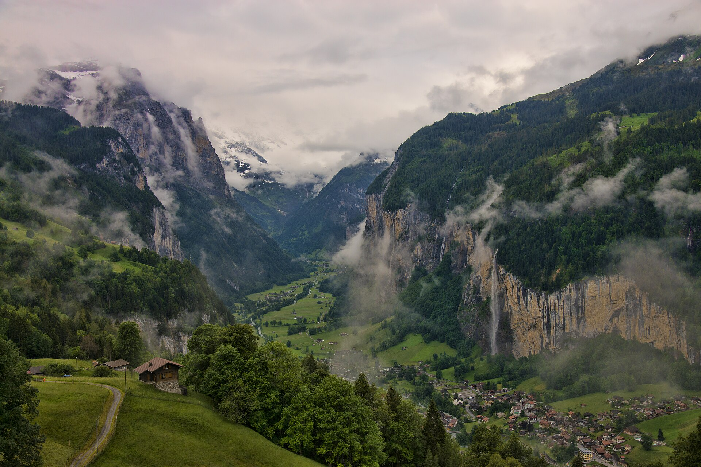

Interlaken and the Jungfrau Region · 5-day family itinerary
One base by Interlaken Ost, the two mountain trips whose season ends on 25 October placed first, and an arrival day that allows for the replacement bus into Interlaken Ost.

Photo: chensiyuan, 1 lauterbrunnen valley 2012, CC BY-SA 4.0, via Wikimedia Commons.

Checked before you commit
This illustrative route keeps four nights near Interlaken Ost and uses the Bernese Oberland Railway, one cable car, one cogwheel railway, one funicular and a valley bus. The order of Days 2 to 4 follows the end of the mountain season. The train and bus times below come from a Swiss timetable query run on 8 October 2026 for the example dates. Nothing was booked.
One hotel within walking distance of Interlaken Ost, where the trains to Grindelwald, Lauterbrunnen and Wilderswil start and the Harder funicular is a short walk away. No second hotel and no Jungfraujoch day.
One mountain anchor a day, with the valley day in the middle and the hotel by late afternoon. Trümmelbach Falls does not admit children under 4, so Day 3 has a flat alternative.
From 19 October to December 2026, BLS runs no trains between Interlaken West and Interlaken Ost, and replacement buses run instead. Lift seasons, hours and timetables were not checked for your dates. A booking-hub link is intent only. It does not buy a rail ticket or a lift ticket.
Planning boundary: dates are illustrative. The worked example runs Tuesday 20 to Saturday 24 October 2026, inside the rail closure and in the last week of the Grindelwald-First and Schynige Platte seasons. Hours, seasons and prices come from pages opened on 8 October 2026. Alfred does not check rail engineering works or a lift’s season while it writes the day. Book opens a partner checkout. It does not prove that a ticket exists. Interlaken is not one of the destination guides in the signed-in app.
Route and family-coordination brief
Party: two adults and school-age children aged 4 and over. A younger child is allowed for, with one exception noted on Day 3. Base: four nights near Interlaken Ost. Pace: moderate, one anchor a day. Budget input: Mid Range. The only prices stated here are the ones a page actually printed, and they are “from” prices.
Getting there: BLS, which runs the line, says that from Monday 19 October to Saturday 12 December 2026 there are no trains between Interlaken West and Interlaken Ost. Trains run only as far as Interlaken West, and replacement buses carry on to Interlaken Ost and Wilderswil. The same page’s summary table gives 19 October to 11 December, so treat the end date as approximate. BLS says journey times are longer on some connections and asks travellers to check the online timetable before every trip.
Getting around: Jungfrau Railways says the Bernese Oberland Railway runs every 30 minutes from Interlaken Ost to Grindelwald. In the timetable for the example week, the trains to Lauterbrunnen also leave at 4 and 34 minutes past the hour, and the train to Wilderswil takes 5 minutes. None of these trains uses the closed section.
The season order: the Grindelwald-First cable car’s page shows its season running from 29 November 2025 to 25 October 2026. Most things on the Schynige Platte page are dated to 25 October 2026, and the timetable shows Schynige Platte Railway trains on Sunday 25 October and none on Monday 26 October. Trümmelbach Falls and the Harder funicular run later. So First goes on Day 2, Schynige Platte on Day 4, and either can fill the other’s day if the weather turns. After 25 October, neither can be the fallback.
Day 1 — Arrive at Interlaken Ost by the replacement bus, then the Harder funicular
Travel to Interlaken through Bern. As one example, the timetable for Tuesday 20 October shows IC 61 leaving Bern at 11:04 and ending at Interlaken West at 11:53. Then comes a 3-minute walk to the “Interlaken, West Rugenparkstrasse” stop, and replacement bus EV 1 at 11:58, reaching Interlaken Ost at 12:04. The same train on Thursday 15 October, before the closure, runs through to Interlaken Ost at 11:59. On paper it is five minutes longer. In practice it is one more change, with bags and children, onto a bus.
BLS publishes a map for each station showing where the replacement buses leave. Open the Interlaken West map before you travel, so the walk to the stop is not worked out on the platform. Leave bags at a hotel near Interlaken Ost. If your hotel can’t take bags before check-in, ask it, not the timetable.
Afternoon: the Harder Kulm funicular. Jungfrau Railways says the valley station is a short walk from Interlaken Ost and the ride takes 10 minutes. Its page shows a season of 3 April to 29 November 2026, and for the week shown on 8 October, first ascent 09:10, last ascent 20:10 and last descent 21:10. The timetable for the example Tuesday shows the funicular running. BLS notes that the rail crossing at the Beau Rivage bridge, by the Harder funicular, is closed to motor vehicles from 18 October. People on foot and on bikes can still cross, and the walking route near the funicular may change at short notice when it is busy.
Fallback: if the bus connection runs late or the children are done, skip Harder Kulm today. It runs to 29 November, so it can go on the morning of Day 5. Do not start a mountain trip on arrival day.
Day 2 — Grindelwald-First while its season is still running
Take the Bernese Oberland Railway from Interlaken Ost to Grindelwald. The timetable for Wednesday 21 October shows trains at 08:34, 09:04 and 09:34, each taking 36 minutes. Jungfrau Railways warns that Grindelwald Terminal is not the last stop: stay on one more stop to Grindelwald. The First cable car’s valley station is in the village centre, about 10 minutes on foot.
The six-seat gondolas reach First in 25 minutes, by way of Bort and Schreckfeld. The page lists a cable car ticket from CHF 38. For the week shown on 8 October, the first ascent was 08:00, the last ascent 16:30 and the last descent 17:00. Check the times for your own date, because the page shows one week at a time. At the top, the First Cliff Walk is a 45-metre footbridge along the rock face, about 20 minutes. Families with energy can walk to Lake Bachalpsee. The page says the trail takes less than an hour each way, about 2 hours return, from the First mountain station.
On the way down, the Bort Alpine Playground covers 700 square metres, with a stream to dam and nets and ropes to balance on. The page dates the First Mountain Cart (Schreckfeld to Bort) from 9 May to 25 October 2026 and the Trottibike (Bort to Grindelwald) from 11 April to 25 October 2026. Their age and height rules were not opened, so check them before you promise either to a child.
Fallback: if cloud or wind spoils the view, swap Day 2 and Day 4. Both mountain trips still run on Friday 23 October. If both days are bad, there is no third chance this season: the cable car’s season shown on its page ends on Sunday 25 October.
Day 3 — The Lauterbrunnen valley and Trümmelbach Falls
Take the Bernese Oberland Railway to Lauterbrunnen. The timetable for Thursday 22 October shows the 09:04 from Interlaken Ost arriving at 09:26. Staubbach Falls is the first stop on foot. Jungfrau Railways says the water drops 300 metres over the rock face, with a gallery open from May to October, so check whether the gallery is still open on your date.
Then take bus 141 towards Stechelberg. In the example timetable it leaves Lauterbrunnen station at 10:05, 10:35 and 11:05 and reaches the “Trümmelbachfälle” stop in 7 minutes. Trümmelbach Falls is ten glacier waterfalls inside the mountain, reached by a tunnel lift. The falls’ own site says they are open daily from the beginning of April until November, 9:00 to 17:00 outside July and August, and asks visitors to check exact times at the start and end of the season. Jungfrau Region Tourism lists the 2026 closing date as 9 November, weather permitting. Allow about an hour. The listing gives adult prices from CHF 18 and ages 6 to 15 from CHF 8. Babies and children under 4 are not allowed in, for safety reasons.
Lunch in Lauterbrunnen, then back to Interlaken in the early afternoon. No restaurant is named here, because no restaurant page was opened.
Fallback: with a child under 4, skip Trümmelbach. Lauterbrunnen Tourism describes a mostly flat walk from Lauterbrunnen towards Stechelberg past the waterfalls, so walk part of it and take bus 141 back. In heavy rain, keep to Staubbach Falls and an early train back.
Day 4 — Schynige Platte by cogwheel railway, or First’s spare day
Take the Bernese Oberland Railway from Interlaken Ost to Wilderswil. The timetable for Friday 23 October shows the 09:04 arriving at 09:09. From Wilderswil, the Schynige Platte Railway climbs to 1,967 metres. The example timetable shows departures at 09:25, 10:05 and 10:45, each taking 52 minutes. Jungfrau Railways says about an hour, and lists a return ticket from CHF 34.
At the top, the page lists a free alphorn concert near the station every day between 11:00 and 14:00, the Botanical Alpine Garden with around 800 alpine plants, about an hour, and a playground at the mountain hotel. All three are dated 13 June to 25 October 2026. Lily’s Puzzle Trail is for children aged 4 to 11 and takes about 45 minutes, with nine posts and a small prize. Go up on an early train and come down in the early afternoon.
The timetable queried on 8 October shows Schynige Platte trains on Sunday 25 October and none on Monday 26 October or Monday 2 November. The page dates some things, such as the puzzle trail and the mountain restaurant, to 29 November. Plan on the train, not on those later dates.
Fallback: if Day 2 was lost to weather, use today for First instead. If both mountain trips are clouded out, Harder Kulm, 10 minutes from Interlaken, is the lower-commitment view. It runs to 29 November.
Day 5 — A short morning, then the train route without a bus
Check out and leave bags at the hotel. If Harder Kulm moved off Day 1, go up when it opens, which was 09:10 in the week shown on 8 October, and be back down by mid-morning. Otherwise keep the morning near the hotel.
The timetable for Saturday 24 October shows two ways from Interlaken Ost to Zurich Airport. The 11:04 Luzern–Interlaken Express runs to Lucerne at 12:55, then IR 70 reaches Zurich Airport at 14:21. That is 3 h 17 min with no bus. The 11:21 replacement bus EV 1 runs to Interlaken West Rugenparkstrasse, then RE 9 to Spiez, an ICE to Olten and IC 5 to Zurich Airport at 14:11. That is 2 h 50 min with three changes, the first from a bus. The Lucerne train’s seat-reservation rules were not checked.
Fallback: with heavy bags or a flight to catch, take the route without the bus and leave a wide gap at the airport. Do not try to recover a missed mountain trip on departure morning.
Planning notes
Dates are illustrative. Recheck the BLS works notice, the timetable for your exact date, the lift seasons and hours, Trümmelbach’s closing date and prices at decision time. Swiss timetables change with works and seasons, so a typical weekday is not your weekday. A travelling profile is required. On web Lets Go, Holiday takes origin, destination, dates, a budget step and a day pace, then Plan my trip queues the itinerary. A Moderate day pace fills a morning and an afternoon activity slot, with lunch and dinner. The Estimated costs bar, when it appears, is a rounded median of flight-and-hotel packages, not a rail fare or a lift ticket. While the trip is still Planning, you can keep or change the hotel and then the flights Alfred picked. Once it is ACTIVE, it can be viewed, edited and shared, and an item’s title, times and notes can be edited by hand, so the replacement bus and the season end can sit on the card. If you ask Hey Alfred to retime the itinerary, venue times move but flights, hotels and transfers stay as they are, so a changed transfer is a hand edit. Hey Alfred can swap two full days after you confirm, such as Day 2 and Day 4, but not a day with a flight. If you tell it the weather has turned, it offers options built from items already in your plan and changes nothing until you pick and confirm. Book opens a partner checkout. It does not buy a rail ticket or hold a lift ticket. Interlaken is not one of the destination guides in the signed-in app.
Plan a trip
Start with your people, dates and pace, then review the editable plan before booking.
Plan a trip